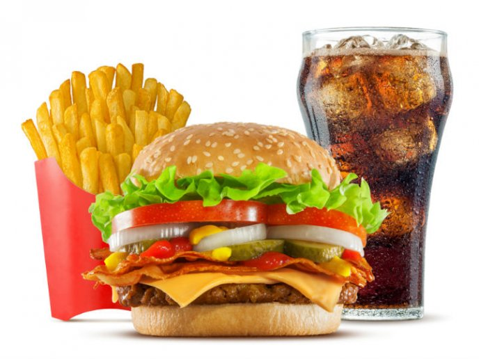

comidas
Desgustacion de comidas


Pizza de calabreza
21 de febrero 2019

Origen de la calabresa. La pizza calabresa es una de las mejores versiones por las que puedes optar a la hora de disfrutar una buena pizza. Esta tradicional receta italiana podría decirse que es para valientes, ya que tiene bastante picante y el chorizo termina oficiando como el condimento ideal a esta preparación.

Mou
Demasiado exquisita esa pizza calabresa 'toodo me quedo perfecto .

Izabel
esta muy bien preparada y se ve deliciosaaa
Ale
Esta pizza tiene más magia si las rodajas de longaniza calabreza van bajo la muzzarella. Nota adicional, además de orégano, una decente lluvia de ají molido le da un toque justo de picante. Abrazos argentinos para todos
Comida rapidas
21 de enero 2019
Una de las características más importantes de la comida rápida es que puede consumirse sin el empleo de cubiertos, como, por ejemplo, pizzas, hamburguesas, pollo frito, tacos, sándwiches, patatas fritas, aros de cebolla, etc. Esta característica permite diferentes tipos de servicio: consumo en local, recogida en local y consumo en la calle o a domicilio, entrega domiciliaria. También es característico que en la mayoría de los establecimientos de comida rápida no hay camareros ni servicio de mesa —aunque sí suele haber personal encargado de recoger y limpiar las mesas, preparándolas para los nuevos comensales—, y las personas deben hacer cola para encargar y pagar su comida, que es entregada al instante o tras un breve lapso de tiempo, para que posteriormente pueda ir a disfrutarla, sentado en el local o en otro lugar.
Juan
Me en canta salir a comer a los camiones de comida rapida
Diana
Es una gran ventaja para cuando vivis solo y no tenes ganas e cocinar
Sandra
Es muy mala para la salud, es un vicio